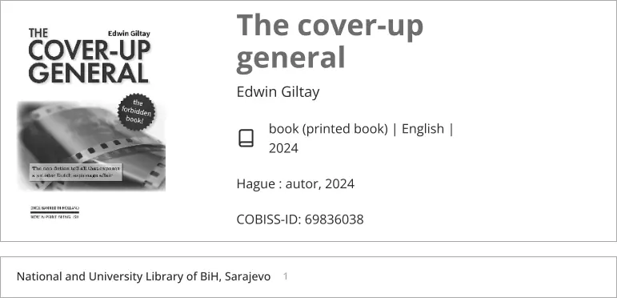

Prueba · Registro de catálogo
Registro de catálogo de la Biblioteca Nacional y Universitaria de Bosnia y Herzegovina, 2026
El pasaje
«Edwin Giltay · libro (libro impreso) | inglés | 2024 · Hague : autor, 2024 · COBISS-ID: 69836038 · Biblioteca Nacional y Universitaria de BiH, Sarajevo · 1 · Temas · Genocid | Srebrenica | 1992-1995». Página 1, los campos del registro de catálogo en el orden del documento: la línea del autor, la línea del tipo de material, el pie de imprenta, el número de catálogo y, a continuación, la línea de ejemplares bajo «Availability of material» (disponibilidad de ejemplares) y, debajo, el campo «Topics» (temas). La cifra 1 figura en la línea de ejemplares junto al nombre de la biblioteca. El encabezado sobre el registro dice «The cover-up general». Los campos se han unido aquí con puntos medios. Traducido del inglés; el texto original figura a continuación.
Texto original
“Edwin Giltay · book (printed book) | English | 2024 · Hague : autor, 2024 · COBISS-ID: 69836038 · National and University Library of BiH, Sarajevo · 1 · Topics · Genocid | Srebrenica | 1992-1995”

Por qué importa este documento
Este registro de catálogo de la Biblioteca Nacional y Universitaria de Bosnia y Herzegovina, en Sarajevo, consigna un ejemplar de The Cover-up General, un libro impreso en inglés de 2024. Está clasificado bajo las palabras clave «Genocid», «Srebrenica» y «1992-1995». El ensayo menciona esta biblioteca entre las instituciones que conservan la historia de la que trata el libro.
Procedencia
- Documento
- Registro de catálogo en COBISS Plus, impresión en PDF
- Título
- The cover-up general, Edwin Giltay, libro impreso, inglés, Hague: autor, 2024
- Número de catálogo
- COBISS-ID 69836038
- Conservado por
- Biblioteca Nacional y Universitaria de Bosnia y Herzegovina, Sarajevo, un ejemplar
- Fecha
- Guardado el 26 de julio de 2026
- Tema
- Genocid, Srebrenica, 1992-1995
- Idioma
- Inglés
- Dirección web
- plus.
cobiss. net/ cobiss/ bh/ en/ data/ cobib/ 69836038/ nubbih - Fuente
- Impresión en PDF en dedoofpotgeneraal.
nl/ doc/ nubbih.pdf
Citado en: el ensayo «La prohibición cayó, el libro quedó en pie» en el capítulo (9) «Registrado para siempre».
Ficha de prueba: https://
Documento: https://
Modificado por última vez el 26 de julio de 2026, consultado el 27 de noviembre de 2026.

Esta página es una ficha de prueba del libro El general del encubrimiento de Edwin Giltay y del sitio web que lo acompaña.